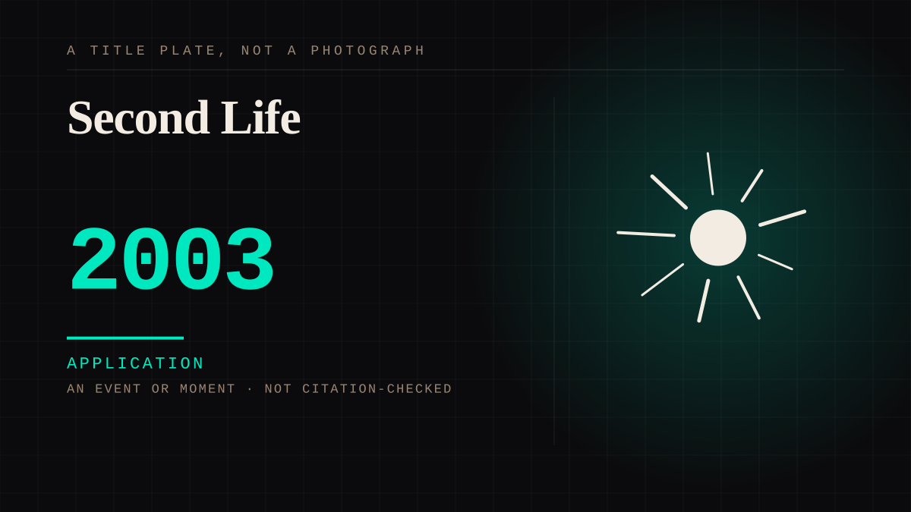

An event or moment · 2003 · Virtual worlds
Second Life
A persistent virtual world with avatars, economies, and relationships between people who never met.

Parasocial attachment with a body and a social graph, and the first virtual environment where the loneliness was addressed directly rather than incidentally. It also produced the first convention-attendance problem in a space with no physical convention.
Application. One-sided attachment put to work on purpose. Creator economies, community, fandom as infrastructure, and the things that genuinely help people. Not automatically good - a tool with an obvious use is a tool that will also get a bad one.
Where it sits
2000 2000-2009 · 2003 2009
Provenance · 6 source record(s)
- retrievableMeasured on a validated attachment scale with 125 Second Life residents: attachments formed in the virtual world are EQUALLY STRONG as those in real life. The virtual bond is not a diluted version of the real oneQuackenbush, D. M., Allen, J. G., & Fowler, J. C. Comparison of Attachments in Real-World and Virtual-World Relationships. ↗
- unverifiedAND THE PART THAT IS NOT A DILUTION: attachment anxiety is LOWER in virtual-world relationships than real ones. Emotional wellbeing tracks strength of attachment in the real world and low anxiety in the virtual oneQuackenbush, Allen & Fowler, Comparison of Attachments in Real-World and Virtual-World Relationships.
- retrievableA regulator's finding on what an avatar is: the avatar is 'a symbol of the self, representing the user's deepest wishes, aspirations, virtues and vices', and for some players becomes a purposeful projection or idealisation of identity, for others an experiment in being someone newOffice of the Privacy Commissioner of Canada (2008). Second Life: Privacy in Virtual Worlds. ↗
- retrievableN=236, recruited inside Second Life, every participant in a committed real-world relationship: 81.7% also had a committed virtual relationship with a DIFFERENT partner, and no real-life relationship was significantly more satisfying than any Second Life relationship in any statistical analysisKolotkin, R. A., Williams, M. M., Lloyd, C., & Hallford, E. W. Does Loving an Avatar Threaten Real Life Marriage? ↗
- unverifiedAnd the asymmetry in how it lands: women tended to define their Second Life relationships as significantly MORE satisfying than their real ones; men as equally satisfyingKolotkin, Williams, Lloyd & Hallford, Does Loving an Avatar Threaten Real Life Marriage?
- retrievableThe capability this entry describes, treated as an experimental asset by researchers: face-to-face communication with full non-verbal cues while never compromising real-world anonymityThe lab versus the virtual lab and virtual field - an experimental investigation of trust games with communication (Second Life). ↗
Connected · 3 out, 3 in
It sits in
The full timeline → · The database → · See it in the atlas →